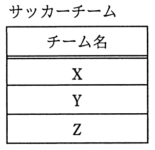
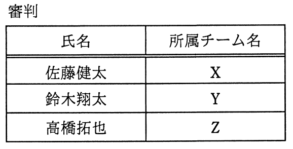
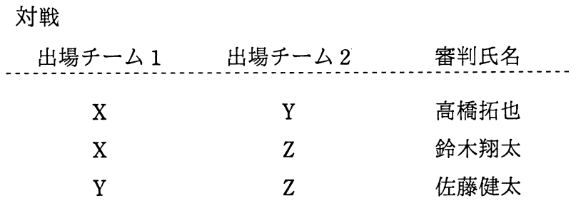

“サッカーチーム”表と“審判”表から，条件を満たす対戦を導出するSQL文のaに入れる字句はどれか。
〔条件〕
・出場チーム1のチーム名は出場チーム2のチーム名よりもアルファベット順で先にくる。
・審判は，所属チームの対戦を担当することはできない。



〔SQL文〕
SELECT A.チーム名 AS 出場チーム1, B.チーム名 AS 出場チーム2,
C.氏名 AS 審判氏名
FROM サッカーチーム AS A, サッカーチーム AS B, 審判 AS C
WHERE A.チーム名 < B.チーム名 AND a
ア
(A.チーム名 <> C.所属チーム名 OR B.チーム名<> C.所属チーム名)
イ
C.所属チーム名 NOT IN (A.チーム名, B.チーム名)
ウ
EXISTS
(SELECT * FROM 審判 AS D WHERE A.チーム名 <> D.所属チーム名
AND B.チーム名<> D.所属チーム名)
エ
NOT EXISTS
(SELECT * FROM 審判 AS D WHERE A.チーム名 = D.所属チーム名
OR B.チーム名 = D.所属チーム名)